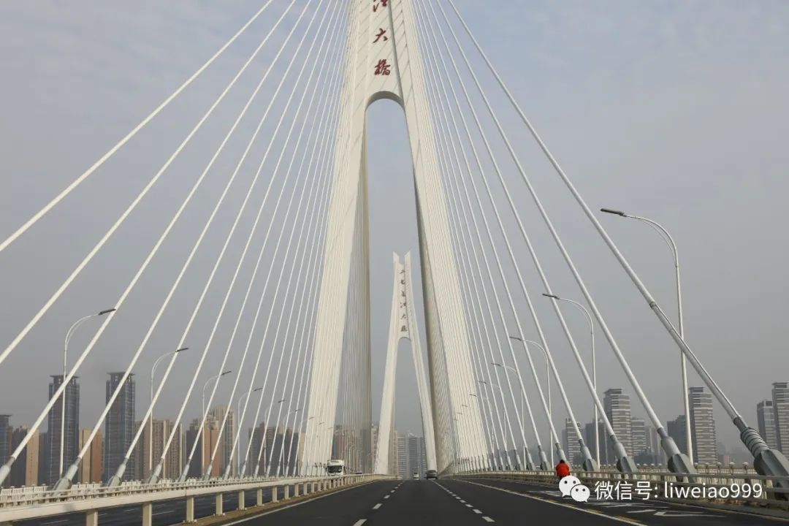
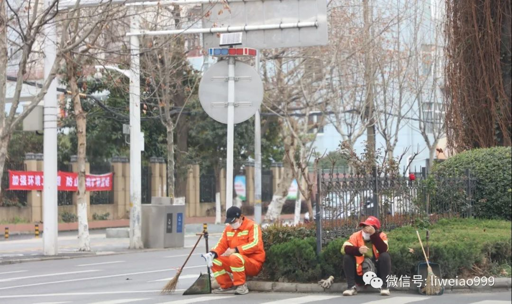
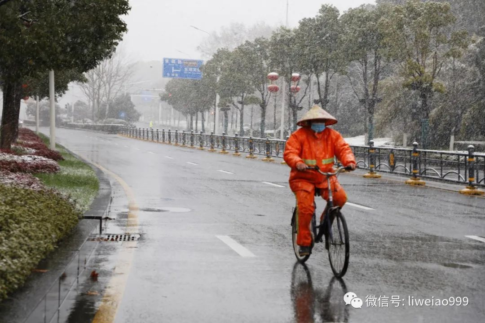
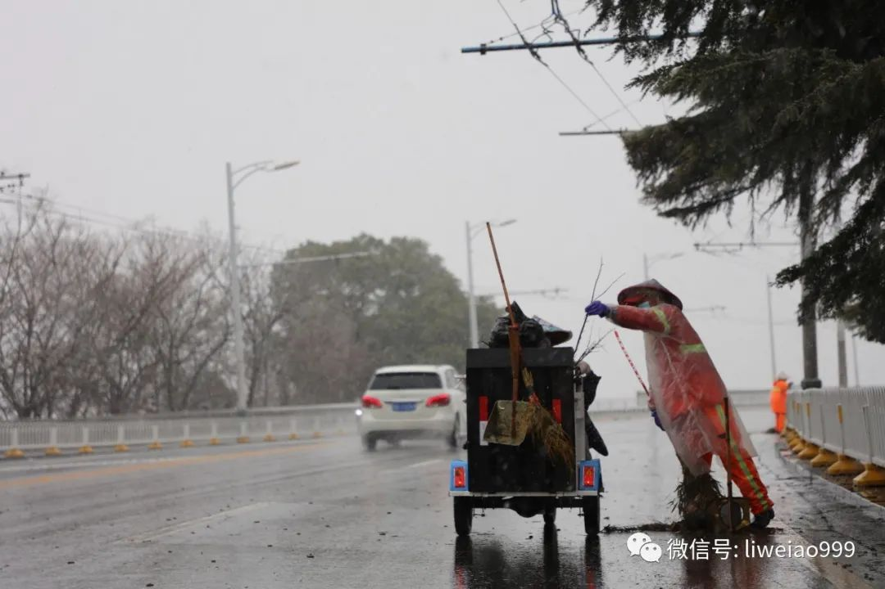

没想到！一群高中生和一群95后，在帮他们解决口罩问题
原文链接 备份链接 “环卫工人还是需要被关注的。”一群高中生创立的“口罩深圳”项目，和一群大学生创立的“口罩珠海”项目，希望在疫情期间帮助环卫工人解燃眉之急。 文 | 甘笠男 蒋敏玉 陈淦博 编辑 | 小豆 早晨五点多的深圳，天还没有亮 …
今天（2020年3月6日），在武汉市青山区的建设三路上，看到几位环卫工人大姐，在做扫把。
我问她们，为什么连扫把都要自己做么？
回答说：上头只发竹叶子……

这是我第一次见到这样的场景，我很吃惊。
我也想起了从2月初到今天，这一个多月来，在武汉街头——也就是医院之外，见到的最多的几个职业群体：快递员（包括外卖）、警察、环卫工人。
其中人数排第一的，毫无疑问就是环卫工人师傅们——无论天晴还是落雨，刮风或者下雪，每一天，我都能见到他们的身影。
我不知道他们是否有选择“不出来工作”的自由，不过，可以看得见的是，这些天里，武汉的街道始终干干净净。
我把这些天拍的环卫工人们，整理一下，也算是《武汉，这些天的街头巷尾》（之四）吧。
（之一：武汉，这些天来的街头巷尾；之二：武汉，这些天来的街头巷尾（之二）；之三：武汉，这些天的街头巷尾（之三））
3月6日
天阴
建设三路上，正在编扫把的环卫师傅们。
路的对面，就是那个昨天(2020年3月5日)，对着副总理喊“假的、假的”那个开元公馆。
3月5日
天气晴好
武珞路上，正在倒垃圾桶的师傅们。
又是第一次见到：
垃圾桶挂在垃圾车上，然后可以自动倾倒垃圾。


二七大桥上，车很少，人也很少，偶尔看到前面有一位穿彩色衣服的人，我拿起相机，拍下来，车驶进一看，依然是位环卫工人大姐。
这一个月多来，不知道走了武汉多少座大桥，每一座，都很美。

3月4日
武汉市中心医院南京路院区外，这位腿脚不便的环卫工人师傅，一直在忙个不停。
这家医院包括李医生在内，已经有3位大夫因为感染新冠病毒去世了，而且，还有几位医护人员病情危重……
3月3日
喻家湖路，这不是环卫工人，可能是在进行道喷洒消毒作业的道路养护人员。

坐在路沿上休息的环卫师傅们（不记得这是哪条路了……）

2月26日
在工人村一带
附近的工厂，是武钢等企业，一直在生产着。

在中北路附近，这位师傅开的是“北京环卫”的车，我想起各地组织环卫工人来支援武汉的信息。
我特别赞同一个建议：
应该优先“派遣”党政机关里的党员，尤其是“学习强国”积分最高的那些人来武汉支援，医务工作他们做不了，但帮忙扫地，做清洁卫生应该问题不大——这也是检验学习成果最好的方式。

2月25日
古文路上，一辆在路上喷洒消毒的车。
这条路上，有个小区叫“江湾新城”，在2月中上旬，有一位居住于此的老人跳楼了……

2月21日
中山路上，站在路边吃午餐的师傅们。
2月20日
在湖北省政府门口

2月15日
大雪纷飞
东湖路上


武珞路，前方，就是武汉长江大桥
这位大姐和她的同伴，在大雪里，也一直没有停下工作。

可以肯定，武汉的情况是一天天在变好；当然，这几天里，每天还有二三十位新冠肺炎感染者在离开人世——几个小时前，一位医疗队员朋友有些沮丧地跟我说，他们接管的医院里，今天又走了一位老人……
樱花，已经次第开放；“胜利”，似乎就在前方。
但请不要忘了，这“胜利”之中，有环卫工人师傅们，不可或缺的一份。
因为，在疫情最严峻的日子里，在疫情逐渐好转的日子里，他们始终，都在家门之外，工作……
长按二维码向我转账
敖虽资浅，愿为良记
受苹果公司新规定影响，微信 iOS 版的赞赏功能被关闭，可通过二维码转账支持公众号。
原文链接 备份链接 “环卫工人还是需要被关注的。”一群高中生创立的“口罩深圳”项目，和一群大学生创立的“口罩珠海”项目，希望在疫情期间帮助环卫工人解燃眉之急。 文 | 甘笠男 蒋敏玉 陈淦博 编辑 | 小豆 早晨五点多的深圳，天还没有亮 …
原文链接 备份链接 我与男朋友异地恋，他在武汉，我在杭州。1 月初的时候，考虑到男朋友可能年后外派出国，我决定 1 月 10 号前往武汉和他过周末。 知道我的计划后，我的同事兼舍友小柔和曼曼发了我一条发现新冠病毒的新闻。但疫情的发展趋势并 …
原文链接 备份链接 摘要：晏辰刚在武汉“封城”的前一天出生，很快被发现患有严重的皮罗综合征，亟需手术治疗。国内能为他做手术的专家远在南京，民间志愿者、两地医院、湖北安徽江苏三省政府部门以及媒体通力合作，将晏辰刚在72小时内从武汉转诊至南 …
原文链接 备份链接 滞留者免费住上了宾馆，包三餐“医院这个地方他们不敢来赶，怕传染，我到别处去连续好几天都被赶”。2月24日，滞留武汉的陈飞告诉某不愿具名的志愿者团队。 陈飞等二十多名滞留者在中山公园地铁口露宿了多日。这个地铁口和协和医院 …
原文链接 备份链接 🎧 点击上方图片，跳转「故事FM」小程序，收听真人讲述。记得添加「我的小程序」，一键收听全部故事哟！ 在这次疫情期间，我们听说了各种志愿者献爱心、捐助的故事。每到这种大的困难出现的时候，大家都热情高涨，希望可以尽一份 …